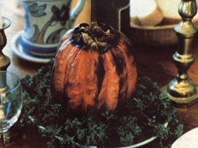

Our friends laughed when we first told them we planned to stuff a pumpkin on Thanksgiving, instead of the traditional gobbler. Come to think of it, at the time we were still pretty "green" at vegetarianism, and weren't so sure ourselves that we could successfully pull off a meatless "Turkey Day." But we were hooked on our new lifestyle, so we were willing to give it a try!
Unable to find a suitable recipe for stuffing and baking our entree in any of the cookbooks we had available, we decided to invent our own. So, using many of the same fresh ingredients found in traditional stuffing - walnuts, mushrooms, celery, raisins, sage and so forth - we created a Thanksgiving feast that even the staunchest turkey-loving Pilgrim couldn't have passed up. Why, each steaming mouthful of tender, slightly sweet pumpkin "meat" topped with buttery, perfectly seasoned dressing simply melted in our mouths!
And now, every November, as we sit down to our traditional festive meal, highlighted by roast pumpkin, we pause to toast our very first vegetarian Thanksgiving.
1 stick margarine
1 large onion, coarsely chopped
1 cup diced celery
1 cup mushrooms, sliced
8 to 10 slices whole wheat bread, toasted and cubed
1 cup apples, chopped
1/2 cup coarsely chopped walnuts
1/2 cup coarsely chopped Brazil nuts
2/3 cup raisins
2 eggs
1/2 stick of butter
2 or 3 cloves garlic, finely chopped
1 tsp oregano
1 tsp sage
1/2 tsp cinnamon
1/2 tsp nutmeg
1/2 tsp cumin (powdered)
1/4 tsp salt
1/4 tsp freshly ground pepper
1 cup dry white wine
1 pumpkin, 8 to 10 inches in diameter (for 6 to 8 people)
The Stuffing: Melt 2 tbsp of margarine in a large skillet and sauté the chopped onion over medium heat until the pieces are limp and translucent. Then add the diced celery and cook for 3 to 4 minutes. Toss in the sliced mushrooms, cook for 1 minute, and remove the pan from the heat.
Next, toast the whole wheat bread and cut it into 3/4-inch cubes. Put these in a large mixing bowl and add the sautéed vegetables, apple pieces, chopped nuts and raisins.
Beat the 2 eggs in a separate container and pour them into the bowl. Then mix everything thoroughly.
Let the mixture sit for a moment, and place the butter in a small frying pan and heat it util it melts and starts to bubble. Add the finely chopped garlic pieces and sauté them for 1 minute. Now pour this sauce over the ingredients in the bowl and mix the stuffing with a large spoon. Sprinkle in the oregano, sage, cinnamon, nutmeg, cumin, salt and pepper. To finish up, pour in the cup of white wine and blend thoroughly.
The Pumpkin: Prepare the pumpkin by cutting a large circle around the stem (as if you were making a jack-o'-lantern). Lift that portion off and discard it. Then remove all the inside seeds and stringy matter with a large, sturdy, metal spoon and fill the pumpkin with dressing. Press the breaded mixture into the shell with your hands to make sure your pumpkin is completely stuffed.
Next, using a sharp kitchen knife, cut several small, slit-like pockets at different levels in the exterior wall of the pumpkin. Dab a pat of butter or margarine into each of these crevices.
With that done, place the stuffed pumpkin in an oiled baking dish and cook, in a preheated 350-degree oven, for about 2 1/2 hours. (Cooking time may vary, depending on the thickness of the pumpkin's wall.) As the pumpkin bakes, the butter will trickle down from one side-slit to another, finally winding up in the pan. Periodically baste your bird substitute by bringing the juices up to the top with a pastry brush.
When the aroma is too good to be believed, the pumpkin is a rich orange-brown, and the exposed stuffing is dark and crisp, your entree is probably done. But it's best to test it with a fork to make sure! If the utensil goes in and out of the flesh of the pumpkin easily, you'll know it's ready. So remove the dish from the oven and let it cool for 20 to 30 minutes before serving.
The Gravy: You'll need the following ingredients:
4 tbsp cooked dressing from the pumpkin
2 tbsp vegetable oil
Drippings from the bottom of the roasting pan
4 tbsp flour
2 cups water
1/8 tsp salt or 1/2 teaspoon soy sauce
Heat the oil over medium heat in a small frying pan. Add the pumpkin drippings and stuffing, being careful to break up the dressing as it simmers. Then slowly add the flour, stirring constantly. When the flour starts to brown, gradually pour in the water a little at a time, still stirring continuously. Add the salt or soy sauce. As soon as the gravy thickens, remove it from the burner. (NOTE: Should your gravy cool and become too thick, just add a few drops of water to thin it and reheat it slowly.) This should make 2 cups of sumptuous sauce for spooning over roast pumpkin slices.
Editor's Note: The author suggests the following dishes to fill out a Thanksgiving menu: steamed broccoli, sprinkled with lemon juice; mashed potatoes (with pumpkin-dripping gravy, of course); cranberry sauce; and for dessert, a mince (not pumpkin!) pie.
We tested the roast stuffed pumpkin recipe (we had to use an acorn squash, since no pumpkins were available in midsummer, when we were putting this issue together!). We found it to be every bit as tasty as the author promised. However, the turkey lovers in the taste-test group didn't feel that baked pumpkin was a hearty enough main dish to suit their appetites. Still, even the meat-eaters agreed that this substitute would make a mighty fine side dish for any holiday spread.
|
 RON SCHADEGG Try a stuffed pumpkin in lieu of turkey for a delicious vegetarian feast. |
|
|